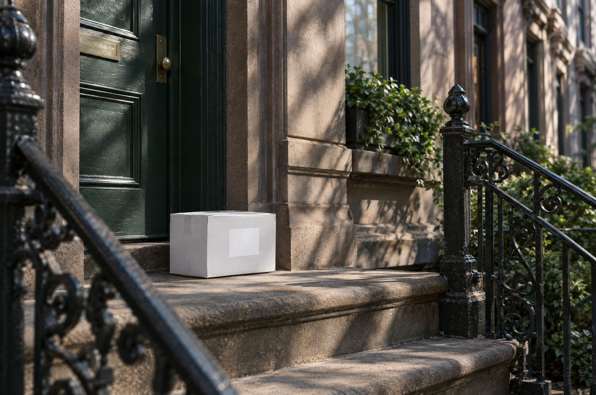

Japan's dealer‑only auctions, open to US buyers
Every week, licensed dealers in Japan trade pre‑owned Hermès, Rolex, Chanel and more at auctions the public can't enter. TheOne holds that licence, bids for you in dollars, inspects every piece in Tokyo and delivers it to your door with duties prepaid.

Why the auction floor
Dealer auctions are closed to individuals, and buying from Japan on your own means duties billed at the door and nobody checking the piece in between. We sit on that floor for you: you bid in dollars from your phone, we buy under our licence, inspect the piece by hand in Tokyo and ship it with everything prepaid. Nothing is charged when the parcel arrives.
The same pieces reach US resale sites later, after several hands and priced for the US market. Here you buy them at the source, with the auction house's own condition notes and our inspection on top.
From account to door, in six steps
-

01. Create a free account
Email and password. No licence, no Japanese address, no import broker — and asking about a lot needs no account at all.
-

02. Bid in dollars, or ask first
Set your max bid. A late bid adds time, so the lot goes to the highest bidder, not the fastest. Questions — more photos, measurements, your delivered total — are answered within one business day.
-
03. We buy it at the auction
We win the lot under our dealer licence and settle with the auction house. Your invoice lists the hammer price, buyer's fee, duties and shipping in one total — pay by card or bank transfer by the date on it.
-

04. Inspected by hand in Tokyo
Checked against the auction house's own notes — hardware, stamps, stitching and materials, piece by piece — before anything ships. Ask for detailed photos of any area.
-

05. Packed to keep its shape
Tissue, dust bag and, for structured bags, a rigid box on request. Larger boxes cost more to ship — the extra is on your invoice before you pay, never after.
-

06. Delivered, duties prepaid
DHL Express to the US in 6–10 days. Import duties are prepaid, so nothing is due at the door.
What you pay
Through TheOne Vintage
- Hammer price
- Buyer's fee
- Express shipping to the US
- Import duties, prepaid
- Inspection in Tokyo
One invoice before you pay. Nothing is charged on arrival. See an example invoice
Importing it yourself
- Lot price
- Auction house buyer's premium
- Domestic shipping in Japan
- International shipping
- Duties and customs handling, on arrival
- Your own authentication
Paid separately, some of it when the parcel arrives.
Fees
How we grade
Every graded lot carries an overall rank, and most carry separate exterior and interior scores on a numbered scale where a lower number is cleaner: 1, 1+, 2, 2+, 3.
Each lot page lists the marks the auction house noted — rubbing, scratches, stains — in its own words. Lots the source did not grade are still inspected in Tokyo before they ship, and you can ask for detailed photos before you bid.
See the full grading guide| Our rank | What it means |
|---|---|
| S | Unused — as new, unworn. |
| A | Excellent — barely used, no obvious wear. |
| B | Very good — light signs of use. |
| C | Good — visible use, nothing structural. |
| D | Fair — clear wear, described in full on the lot page. |
From our desk in Tokyo
We buy under a licensed dealer account, pass every piece through our Tokyo office before it ships, and show the exchange rate we use ($1 = ¥—) on every price.
Questions, before you ask
Do I pay anything to ask about a lot?
No. Send a question and we reply within one business day with availability and your delivered total. There is no payment at that stage and no obligation to go ahead.
What is included in the price you quote?
The lot, our fee, express shipping to the US, and import duties — prepaid. We confirm the total before you pay, and nothing is charged when the parcel arrives.
How long does delivery take?
Six to ten days to the US once the piece has cleared inspection in Tokyo.
How do you know the piece is authentic?
Every lot comes from a licensed dealer auction in Japan, where pieces are checked before they are listed, and we inspect it again in our Tokyo office before it ships to you.
Do I need an account?
Not to ask. Questions are open to anyone — name, email and the lot you want is enough. Bidding needs an account.
Can I ask for more photos?
Yes. Say so in your message and we will send detailed photos of the areas you care about before you decide.